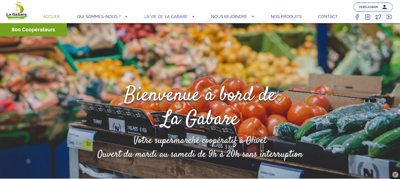
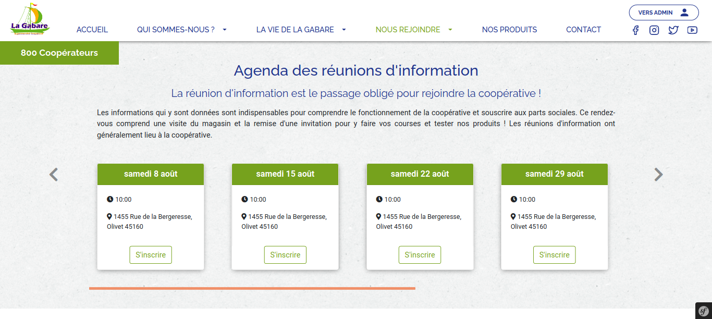
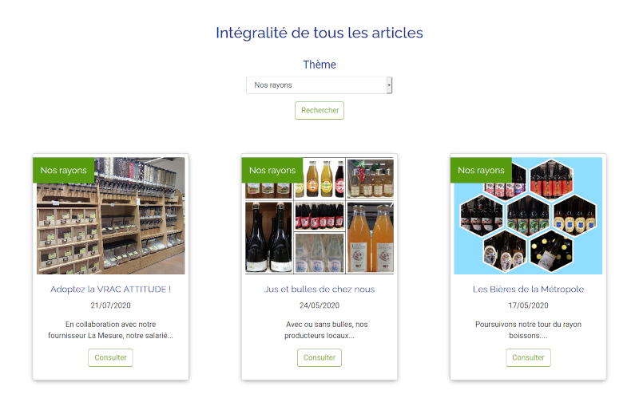
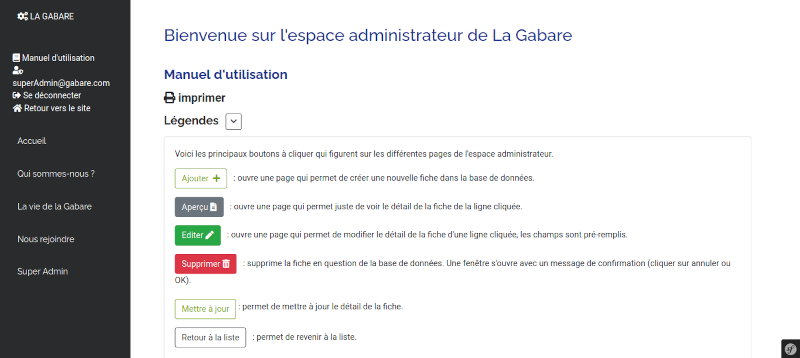

La Gabare (site déployé) - Décembre 2019
Objectif: refonte du site pour donner une meilleur visualisation des activités de la coopérative. Demande d'une partie administrable par différents référents de la coopérative.
Créations de pages suivant les sections à mettre en avant. Événements d'ateliers et événements de réunion d'information disparaissant une fois la date passée. Recherche des articles par catégories. Produits du supermarché requêtés depuis l'API Odoo avec barre de recherche ou filtrés par catégories. Création d'un espace administrateur avec gestion de différents niveaux d'accès administrateur. Manuel d'instruction en ligne convertible en pdf et imprimable.
Technologies: Symfony 4.4, PHP 7.2, MySQL, Bootstrap 4, Twig, Javascript, JQuery, Git, Github.
Méthodologie Agile Scrum sur 8 semaines en équipe de 5.



